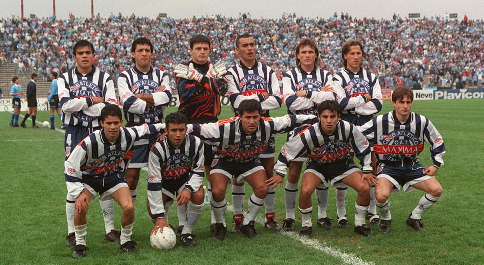

Última temporada en la B y final contra Belgrano

Talleres volvía a caer por segunda vez consecutiva en una final, y se quedaba en la puerta del ascenso, pero esta vez la suerte estaría de su lado. Talleres ganó la zona interior, y luego en la reclasificación ganó la zona A, Belgrano la zona B por diferencia de goles, por lo que debieron enfrentarse en la llamada "Final del Siglo", o "Clásico del Siglo",31 Talleres venció en el primer partido con gol de Zelaya a los 35 minutos del ST, y en la 2.ª final, Talleres vencía 1 a 0 con gol de Albornoz a los 8 del ST, pero el cansancio y las lesiones se hicieron notar, además de la expulsión de Medina Bello, y el partido, inmerecidamente por el desarrollo del juego, en el que la figura había sido Ragg, arquero del pirata. Lo dio vuelta Belgrano y el empate persistió en la prórroga, así que en los penales se definió todo. Anotó Carnero, de Belgrano, anotó Lillo, de Talleres, metió Sosa, falló Clementz, falló Alarcón (atajó Cuenca), falló Astudillo, falló Manrique (atajó Cuenca), metió Díaz, metió Artime, metió Villarreal, seguían 3 a 3, iban a serie de 1. Binetti la estrelló en el travesaño, y Oste lo cambió por gol, y por el ascenso a la Primera División,3233 dándole la vuelta olímpica en la cara a su archirrival. El equipo de Talleres de ese 5 de julio de 98 formó con Cuenca, Lillo, Díaz, y Humoller; Albornoz, Villarreal, Cabrera, Clementz, Garay; Medina Bello y Zelaya. El DT era Ricardo Gareca. La T volvía a Primera34 luego de varios intentos fallidos. Hubo superioridad del público albiazul en los dos encuentros cita requerida . Este partido fue el que le dejó una estrella en el escudo a Talleres